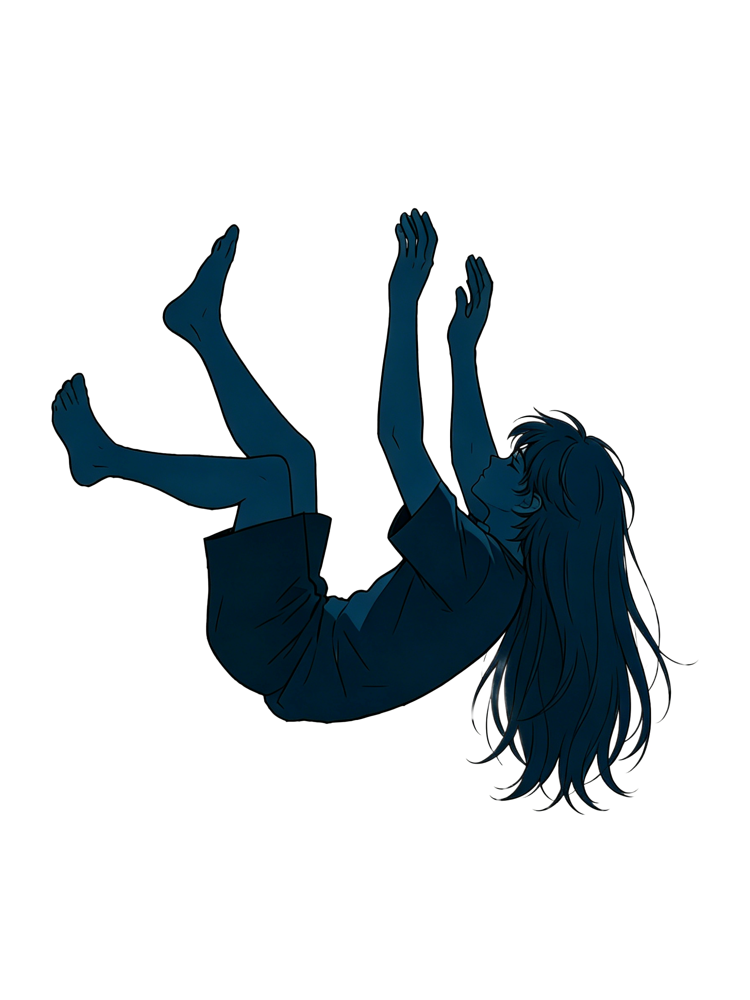
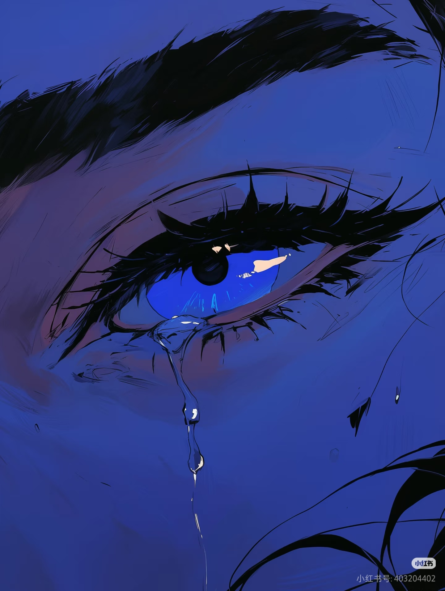

每100名中国青少年中，约15人正经历不同程度的抑郁风险。
而全国每10万人仅配备2.2名精神科医生——
这是一场听不见的危机，发生在最不该沉默的年纪。
青少年心理健康问题远比我们看到的更严重。官方公布的检出率只是冰山一角——大量未被识别、未被诊断、未被记录的案例，沉在水面之下，等待着被看见。
抑郁不是唯一的敌人。焦虑、社交恐惧、自伤行为、进食障碍、游戏成瘾……这些问题往往交织出现。每一个气泡背后，都是无数个在黑暗中独自挣扎的灵魂。
世界卫生组织建议每10万人应配备3-10名精神卫生专业人员。中国当前是2.2名——与美国、法国、日本相差5到10倍。
当一个孩子发出求救信号时，我们能否接住？这不是一个家庭的问题，而是整个社会的系统问题——从识别、到转介、到治疗、到康复，每一步都有孩子在掉队。
—— 中科院院士 陆林
这不是虚构的台词。这些来自真实访谈、网络留言和公开报道中的声音。当我们把它们拼在一起，你会发现——每一个悲剧发生前，都有无数个被忽略的信号。
从出现心理问题到获得持续治疗，五个关键节点：
识别→告知→介入→就医→持续治疗。每个节点都有大量青少年"流失"。
假设100名出现心理问题的青少年 — 最终能获得持续治疗的
仅约 2-3 人
西部省份的精神科医生密度仅为东部的三分之一，学校心理教师师生比差距高达2.5倍。地理位置决定了一个孩子能否被接住。
青少年心理健康服务体系存在多个断裂带：识别能力不足、转介机制缺失、医疗资源不均、康复支持薄弱。
从十七部门联合发文到数据库开放，制度框架正在搭建。但从文本到每个孩子被接住，仍有漫长的路。
以下是经过脱敏处理的典型案例。每一个案例背后，都是一个家庭的挣扎、一所学校的困境和一个系统的漏洞。
所有信息均已匿名化处理。
求助不是软弱，而是勇气。
世界给予他们什么，他们便成为什么。
沉默不是答案，
被听见才是。